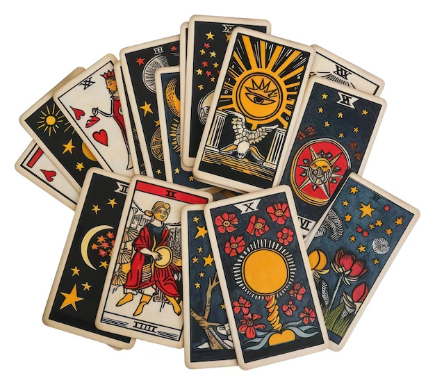
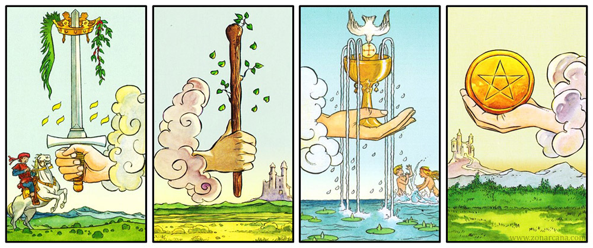

Los 78 espejos
El susurro de los arcanos
Arcanos mayores
Alma del tarot
En el corazón del tarot se encuentran los 22 Arcanos Mayores, las cartas más profundas de la baraja. Numeradas del 0 al 21, representan el viaje del alma y las grandes lecciones de la existencia: transformación, elección, destino y despertar espiritual. Hablan de los ciclos esenciales de la vida.
Los Mayores muestran el panorama espiritual: son un mapa simbólico donde el alma se reconoce.
Este recorrido comienza con El Loco, símbolo del inicio y lo desconocido, y culmina en El Mundo, la realización y plenitud. Entre ambos se despliega un camino de aprendizaje, cambio y evolución que narra la experiencia humana en su forma más esencial.
Este recorrido comienza con El Loco, símbolo del inicio y lo desconocido, y culmina en El Mundo, la realización y plenitud. Entre ambos se despliega un camino de aprendizaje, cambio y evolución que narra la experiencia humana en su forma más esencial.

Significados
0. El Loco: Pureza del espíritu, la fe ciega y el salto al vacío.
1. El Mago: Poder de manifestar y capacidad de convertir en realidad.
2. La Sacerdotisa: Intuición y el conocimiento oculto.
3. La Emperatriz: Encarnación de la fertilidad, creatividad y belleza.
4. El Emperador: Orden, estabilidad y liderazgo consciente.
5. El Hierofante: Tradición, sabiduría espiritual y enseñanzas sagradas.
6. Los Enamorados: Unión y decisiones que definen el camino. Equilibrio entre corazón y mente.
7. El Carro: Avance, el control de fuerzas opuestas y el triunfo.
8. La Justicia (o La Fuerza): Causa y efecto, y necesidad de actuar.
9. El Ermitaño: Retiro sagrado, búsqueda de la luz dentro de uno mismo.
10. La Rueda de la Fortuna: Recuerda que todo cambia y que cada giro trae nuevas oportunidades.
11. La Fuerza (o La Justicia): Coraje interior, paciencia y dominio de las propias pasiones.
12. El Colgado: Enseña a ver el mundo desde otra perspectiva y soltar para recibir nueva comprensión.
13. La Muerte: No es el fin, sino el paso necesario para renacer.
14. La Templanza: Equilibrio y sanación a través de la paciencia.
15. El Diablo: Representa adicciones, sombras y patrones que nos limitan.
16. La Torre: Derrumbe repentino de lo falso para que surja la verdad.
17. La Estrella: Luz divina que guía después de la tormenta. Inspiración y sanación.
18. La Luna: El reino de las ilusiones y el subconsciente. Misterio, intuición y el camino a través de las sombras.
19. El Sol: Alegría y claridad. Vitalidad y la luz que disipa la oscuridad.
20. El Juicio (o El Aeon): Despertar espiritual. Llamado del alma, renovación y liberación del pasado.
21. El Mundo: Culminación y plenitud. La danza completa del viaje. Integración, logro y el fin de un gran ciclo, listo para comenzar otro.
Arcanos menores
Los Arcanos Menores se componen del As, las cartas del 2 al 10, la Sota, el Caballero, la Reina y el Rey. Cada palo está relacionado con un aspecto de la vida. Existen muchas maneras de definir estos significados, pero todos comparten una misma idea.

Copas de la orden
Agua, emociones y relaciones, corazón.
Palos de oro
Tierra, logros, lo material y lo físico, las finanzas y la carrera profesional.
Espadas del palo
Aire, sabiduría y comunicación, conflicto y discordia, intelecto y lógica.
Palo de bastos
Fuego, pasión e inspiración, espiritualidad y nuevos comienzos, creatividad e instinto.
Para terminar de entender el significado de los arcanos menores, tenemos que saber que nos indican sus números. Recuerda, además, que la interpretación de cada uno dependerá de su posición en la tirada y de la intuición de quien la lee.
Uno: Es un indicador de nuevos comienzos, oportunidades y potencial.
Dos: Simboliza dualidad, equilibrio y colaboración.
Tres: Significa creatividad, expresión y comunicación.
Cuatro: Nos indica estabilidad y un pensamiento estructurado.
Cinco: Puede avisar de cambios y desafíos.
Seis: Es un símbolo de armonía, cooperación y reconciliación.
Siete: Es la representación de la evaluación y la sabiduría interior.
Ocho: Representa la fuerza, el poder y la superación de obstáculos.
Nueve: Es un símbolo de logros, culminaciones y éxito.
Diez: Se relaciona con la finalización, el cierre y la transformación.
Las cartas de la corte (Sota, Caballero, Reina y Rey) representan personas o energías presentes en nuestra vida:
Sota: Señala la llegada de noticias y mensajes. También representa la juventud.
Caballo: Nos indica movimiento, acción y liderazgo.
Reina: Está relacionada con la nutrición, la intuición y las emociones.
Rey: Es un símbolo de autoridad, responsabilidad y sabiduría.